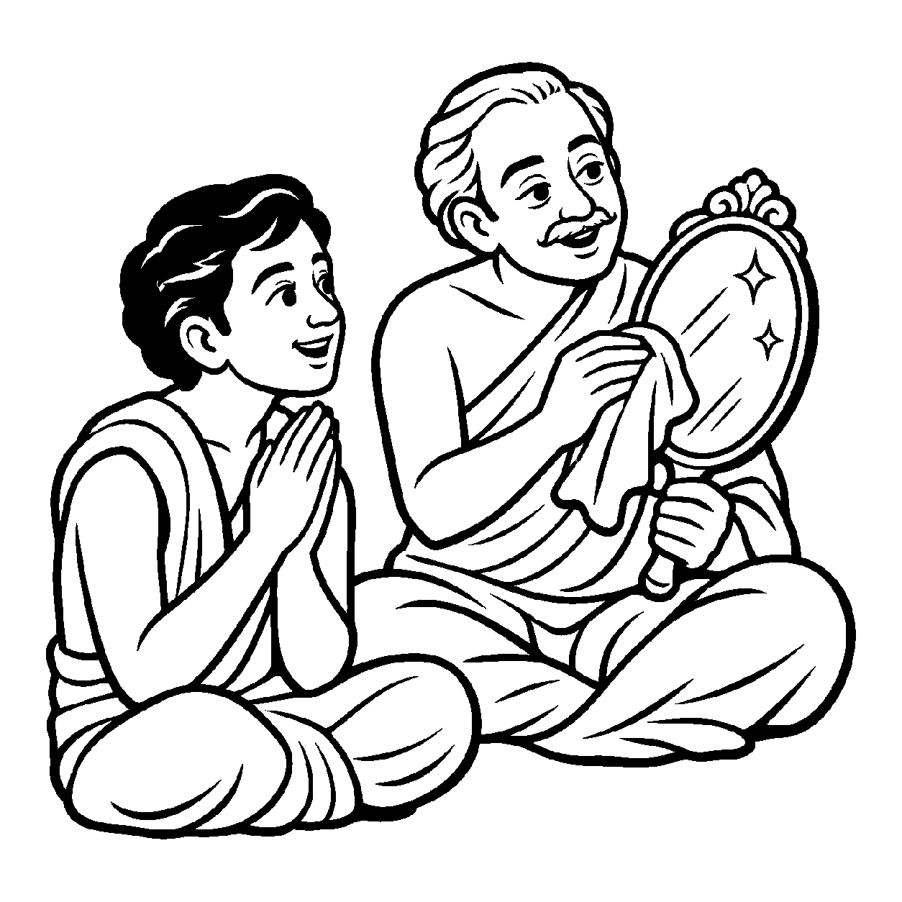

ચૂલા પર મૂકેલું ઉકળતું ગરમ જળ જ્યાં સુધી અગ્નિ હતો ત્યાં સુધી ધગધગતું હતું, પરંતુ જેવો ચૂલામાંથી અગ્નિ ઓલવી નાખવામાં આવે અને વાસણ નીચે ઉતારી લેવાય, તેવો જ બાહ્ય તાપનો અભાવ થતાં જળ આપોઆપ પોતાના મૂળ શીતળ સ્વભાવમાં આવી જાય છે. જળને ઠંડુ કરવા માટે કોઈ નવી શીતળતા બહારથી લાવવી પડતી નથી; કેવળ અગ્નિની ઉપાધિનો અભાવ જ પૂરતો બને છે. તેવી જ રીતે જ્યારે તપ અને સંયમ દ્વારા અષ્ટકર્મોની ઉપાધિનો અભાવ થાય છે, ત્યારે આત્માની પ્રગટ થતી શુદ્ધતાને જોવી તે 'ઉપાધ્યભાવાપેક્ષ શુદ્ધ દ્રવ્યાર્થિકનય' છે.
નય ૨૪ માં ઉપાધિની હાજરીથી અશુદ્ધતા જોઈ હતી. આ નય ઉપાધિના નાશથી પ્રગટતી શુદ્ધતાને ગ્રહણ કરે છે. આત્મામાં કોઈ નવો મોક્ષ કે નવા ગુણો બહારથી દાખલ થતા નથી; કેવળ જે કર્મરૂપી આવરણો અને ઉપાધિઓ આડે આવીને ઊભી હતી, તેનો અભાવ થતાં જ આત્મા સ્વભાવસિદ્ધ પરમ શુદ્ધ પ્રગટ થઈ જાય છે.
આ નય સાધકને પુરુષાર્થનું સાચું ગણિત સમજાવે છે: તું કેવળ કર્મોપાધિને હટાવવાનો પુરુષાર્થ કર, મુક્તિ તો તારો શાશ્વત સ્વભાવ જ છે!
કર્મ ઉપાધિ દૂર થતાં, પ્રગટે શુદ્ધ સ્વભાવ;
ઉપાધ્યભાવે જે લહે, શુદ્ધ નયે પ્રભાવ.
વર્તમાન વિભાવ અને દોષોને સ્વીકારીને પ્રમાદ ત્યજી આત્મશુદ્ધિના પુરુષાર્થમાં સદા જાગ્રત થવું.

ધર્મક્ષેત્રમાં રહેતો એક સાધક સુબોધ વર્ષોથી જપ-તપ કરતો હતો, છતાં તેના મનમાં એક નિરાશાજનક પ્રશ્ન ઘોળાતો હતો: "અનાદિકાળથી મારા આત્મા સાથે અષ્ટકર્મો ચોંટેલા છે. જે બંધન અનાદિનું હોય તે ક્યારેય છૂટી શકે ખરું? જો કર્મ હટી જાય તોપણ શું આત્મા સાચે જ શુદ્ધ થઈ શકે કે પછી એમાં કાયમ માટે કોઈ ડાઘ રહી જશે?" અનાદિ કર્મબંધનના બોજ તળે દબાઈને તે હતાશ થઈ ગયો હતો. તેને લાગતું હતું કે કદાચ મુક્તિ એક અપ્રાપ્ય સ્વપ્ન જ છે. પોતાના મનની આ ઊંડી મૂંઝવણ સાથે તે એકાંત ખૂણામાં બેસી વિલાપ કરવા લાગ્યો: "આ અનાદિ બંધનમાંથી આત્માની પરમ શુદ્ધિ ક્યારે અને કેવી રીતે પ્રગટશે?"
તે સમયે નગરમાંથી પસાર થતાં એક અનુભવી તત્વવેત્તા સંત સુબોધની પાસે આવ્યા. તેમણે સુબોધના હાથમાં એક જૂનો, ધૂળ અને કાજળથી ખરડાયેલો કાચનો અરીસો આપ્યો, જેમાં કશું દેખાતું નહોતું. સંતે એક રેશમી વસ્ત્ર વડે તે અરીસા પરની ધૂળ ધીમે ધીમે લૂછી નાખી. પળવારમાં અરીસો એટલો સ્વચ્છ થઈ ગયો કે તેમાં આકાશના તારલા પણ પ્રતિબિંબિત થવા લાગ્યા! સંતે કહ્યું, "સુબોધ, ઉપાધ્યભાવાપેક્ષ શુદ્ધ દ્રવ્યાર્થિકનયને સમજ. આ અરીસામાં કોઈ નવું તેજ બહારથી રેડવું પડ્યું નથી; કેવળ ઉપર જામેલી ધૂળની ઉપાધિનો અભાવ કર્યો એટલે એની મૂળ સ્વચ્છતા પ્રગટી ગઈ! તેવી જ રીતે આત્મા પર કર્મ ભલે અનાદિના હોય, પણ તે બાહ્ય ઉપાધિ છે. સમ્યગ્દર્શન, જ્ઞાન, ચારિત્ર અને પુરુષાર્થથી કર્માવરણોનો ક્ષય થતાં દરેક જીવ પોતાની સ્વતંત્ર દ્રવ્યસત્તા જાળવી સિદ્ધ અવસ્થા પામે છે!" સંતના આ બોધામૃતનું પાન કરતાં જ સુબોધની તમામ શંકાઓ ઓગળી ગઈ. તેના અંતરમાં કર્મ નિર્જરાનો પરમ ઉત્સાહ પ્રગટી ઊઠ્યો.
જો આ નય કદાગ્રહ બને, તો મનુષ્ય કેવળ ઉપાધિના અભાવ (અભાવરૂપ શૂન્યતા) ને જ આત્મા માની લે છે અને આત્માના સદ્ભાવરૂપ અનંત ગુણોને વિસરી જાય છે. આવી એકાંત જડતાથી જીવ વર્તમાન વ્યવહારિક સાધના અને કર્તવ્યોની ઉપેક્ષા કરી બેસે છે અને ક્રમિક પરિણામોને સુધાર્યા વિના અકાળે પૂર્ણતાના મિથ્યા સંતોષમાં રાચે છે.
આ જ નય જ્યારે સમન્વયશીલ બને છે, ત્યારે તે સાધકને તપશ્ચર્યા અને સંવર-નિર્જરા દ્વારા અષ્ટકર્મોનો નાશ કરીને પરમ નિર્વાણ પદ પ્રાપ્ત કરવાનું સાચું બળ આપે છે.